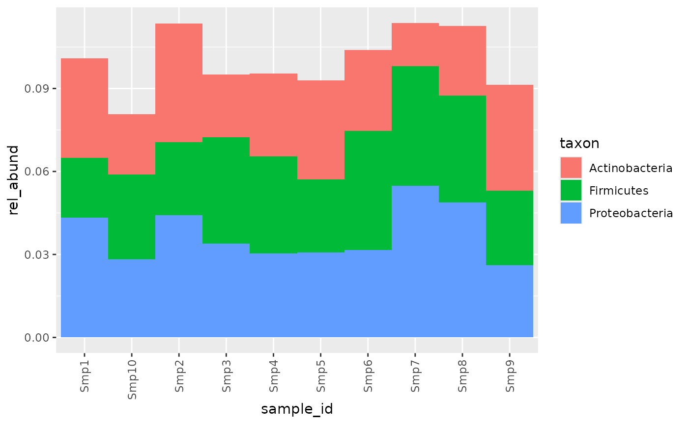
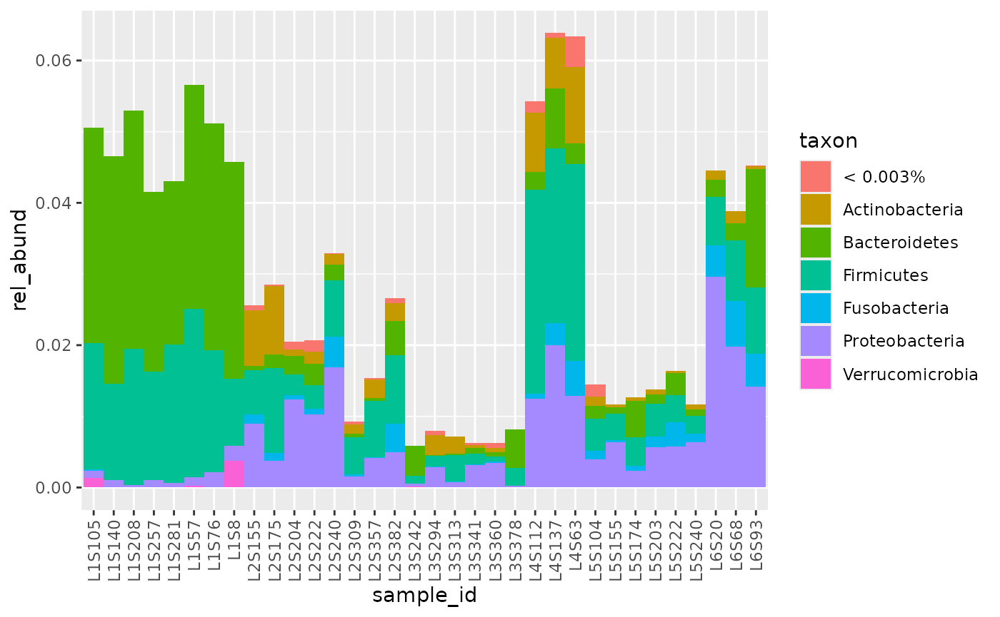
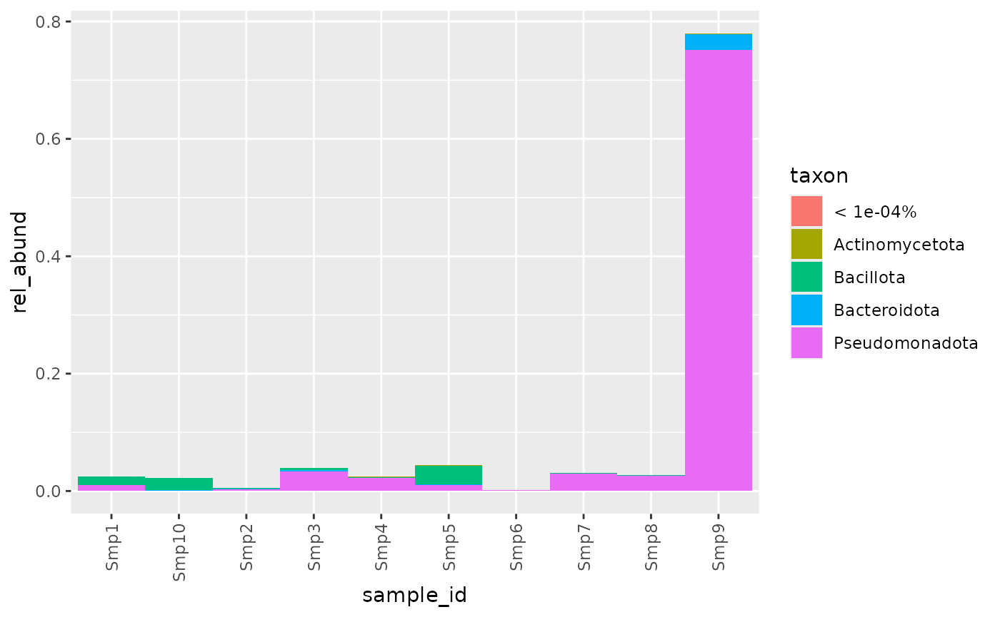

introduction
introduction.Rmd
# example phyloseq
rel_abund_phy(physeq1) %>% bar_plot()
# example qiime
counts_q <- system.file("extdata/qiime/table-dada2.qza", package = "bubbler")
taxa_q <- system.file("extdata/qiime/taxonomy.qza", package = "bubbler")
rel_abund_qiime(counts_q, taxa_q) %>% bar_plot()
# example .tsv
counts <- system.file("extdata/tsv/seqtab.tsv", package = "bubbler")
taxa <- system.file("extdata/tsv/taxa.tsv", package = "bubbler")
rel_abund_tsv(counts, taxa ) %>% bar_plot()
p1 <- rel_abund_phy(physeq1) %>% bar_plot()
#> Loading required package: phyloseq
# example qiime
counts_q <- system.file("extdata/qiime/table-dada2.qza", package = "bubbler")
taxa_q <- system.file("extdata/qiime/taxonomy.qza", package = "bubbler")
p2 <- rel_abund_qiime(counts_q, taxa_q) %>%
pool_taxa(0.003) %>%
bar_plot()
# example .tsv
counts <- system.file("extdata/tsv/seqtab.tsv", package = "bubbler")
taxa <- system.file("extdata/tsv/taxa.tsv", package = "bubbler")
p3 <- rel_abund_tsv(counts, taxa ) %>%
pool_taxa(choose_n_taxa(rel_abund_tsv(counts, taxa))) %>%
bar_plot()
#
# library(patchwork)
# #
# p1 / p2 + p3
p1
p2
p3